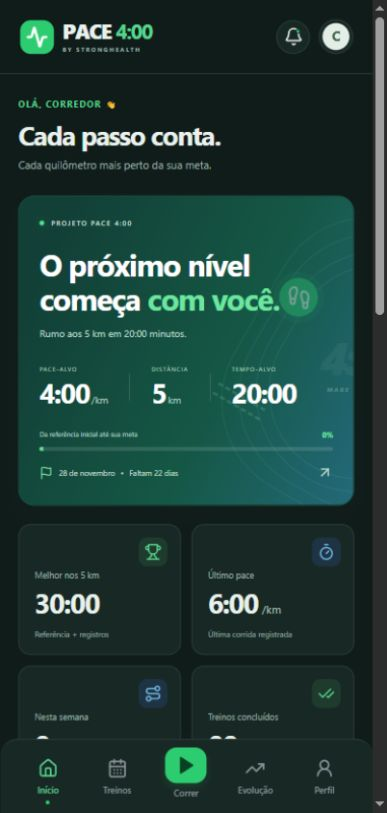

Aplicativo web · Publicado
PACE 4:00
Criei um app de corrida para acompanhar minha evolução rumo ao ritmo de 4 min/km. Ele reúne plano de treino, calendário e histórico de corridas. Aceita calendários do Runna e arquivos de atividades exportados do Strava.
Abrir aplicativo